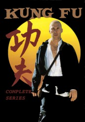

")
 
 IMDB-Wertung: 7.8 / 10
IMDB-Wertung: 7.8 / 10  Tomatometer: 81
Tomatometer: 81  Metascore:
Metascore: 
Kwai Chang Caine is a Shaolin Monk who is on the run after he killed the Chinese Emperor's nephew after that coward killed his teacher in cold blood with a gun. He flees to America to escape retaliation, and to search for his brother in order to settle down in this new land. However, in his travels in the wild west, he can not help but continually run into trouble from desperados and other ruffians as they oppress the innocent, while bounty hunters pursue the price on his head. Against this, he has his skill of Kung Fu martial arts, which proves to be devastatingly effective in this gun-dominated land.
Jahr: 1972
Dauer: 71 Minuten
FSK:
Land: USA Studio: ABCTonspuren: AAC2.0 - ,
Untertitel:
Auflösung: SD (720x404) Größe: 734 MB
Genre: Drama, Abenteuer, Western, TV-Serie
Regisseur: Richard Lang, Jerry Thorpe, Marc Daniels, Harry Harris, John Llewellyn Moxey
Drehbuch: Ed Spielman, Herman Miller, John T. Dugan, William Kelley, Ed Waters
Soundtrack:
Darsteller:
 David Carradine als Kwai Chang Caine, 63 episodes, 1972-1975
David Carradine als Kwai Chang Caine, 63 episodes, 1972-1975 James Hong als Chun Yen, 9 episodes, 1972-1975
James Hong als Chun Yen, 9 episodes, 1972-1975 Richard Loo als Master Sun, 7 episodes, 1972-1974
Richard Loo als Master Sun, 7 episodes, 1972-1974 John Fujioka als Cook, 5 episodes, 1973-1975
John Fujioka als Cook, 5 episodes, 1973-1975 Clyde Kusatsu als Han Su Lok, 5 episodes, 1973-1975
Clyde Kusatsu als Han Su Lok, 5 episodes, 1973-1975 Ted Gehring als Fuller, 4 episodes, 1974-1975
Ted Gehring als Fuller, 4 episodes, 1974-1975 Albert Salmi als Raif, 3 episodes, 1972-1974
Albert Salmi als Raif, 3 episodes, 1972-1974 John Carradine als Rev. Serenity Johnson, 3 episodes, 1972-1975
John Carradine als Rev. Serenity Johnson, 3 episodes, 1972-1975 Soon-Tek Oh als Chen Yi, 3 episodes, 1973-1974
Soon-Tek Oh als Chen Yi, 3 episodes, 1973-1974 John Vernon als Gen. Cantrell, 3 episodes, 1974-1975
John Vernon als Gen. Cantrell, 3 episodes, 1974-1975 Robert Ito als Captain Tim Lee, 3 episodes, 1972-1974
Robert Ito als Captain Tim Lee, 3 episodes, 1972-1974 Richard Narita als Kang Li, 3 episodes, 1974
Richard Narita als Kang Li, 3 episodes, 1974 Brian Tochi als Ho Fong, 3 episodes, 1973-1974
Brian Tochi als Ho Fong, 3 episodes, 1973-1974 Dana Lee als Lieutenant, 3 episodes, 1973-1974
Dana Lee als Lieutenant, 3 episodes, 1973-1974 Anthony Zerbe als Paul Klempt, 2 episodes, 1973-1974
Anthony Zerbe als Paul Klempt, 2 episodes, 1973-1974 James Shigeta als Col. Lin Pei, 2 episodes, 1974-1975
James Shigeta als Col. Lin Pei, 2 episodes, 1974-1975 Stefan Gierasch als Kai Tong, 2 episodes, 1974
Stefan Gierasch als Kai Tong, 2 episodes, 1974 Barbara Hershey als Nan Chi, 2 episodes, 1974
Barbara Hershey als Nan Chi, 2 episodes, 1974 Patricia Neal als Sara Kingsley, 2 episodes, 1974
Patricia Neal als Sara Kingsley, 2 episodes, 1974 L.Q. Jones als Major Clarke Bealson, 2 episodes, 1973-1975
L.Q. Jones als Major Clarke Bealson, 2 episodes, 1973-1975 Michael Greene als Aztec Priest, 2 episodes, 1973-1974
Michael Greene als Aztec Priest, 2 episodes, 1973-1974 Dana Elcar als Judge Todd A. Pritikin, 2 episodes, 1973
Dana Elcar als Judge Todd A. Pritikin, 2 episodes, 1973 John Anderson als Benjamin Dundee, 2 episodes, 1973-1974
John Anderson als Benjamin Dundee, 2 episodes, 1973-1974 Michael Pataki als Buskirk, 2 episodes, 1974
Michael Pataki als Buskirk, 2 episodes, 1974 David Huddleston als Nathaniel, 2 episodes, 1973-1975
David Huddleston als Nathaniel, 2 episodes, 1973-1975 Scott Hylands als Randy Bucknell, 2 episodes, 1973
Scott Hylands als Randy Bucknell, 2 episodes, 1973 A Martinez als Slade, 2 episodes, 1974-1975
A Martinez als Slade, 2 episodes, 1974-1975 Ken Swofford als Dr. Tracer, 2 episodes, 1974
Ken Swofford als Dr. Tracer, 2 episodes, 1974 Jim Davis als Joe Walker, 2 episodes, 1973
Jim Davis als Joe Walker, 2 episodes, 1973 Robert Ridgely als Whipple, 2 episodes, 1974
Robert Ridgely als Whipple, 2 episodes, 1974 Denver Pyle als Dr. Joseph Colton, 2 episodes, 1973-1974
Denver Pyle als Dr. Joseph Colton, 2 episodes, 1973-1974Datei: X:\HD-Serien\Kung Fu\S01\Kung Fu S01E00 Pilot.mkv seit 23.10.2018
Festplatte: HD Serien(I-ST)
 Es gibt insgesamt 182 Filme in der Gruppe 'HD-Serien'
Es gibt insgesamt 182 Filme in der Gruppe 'HD-Serien'